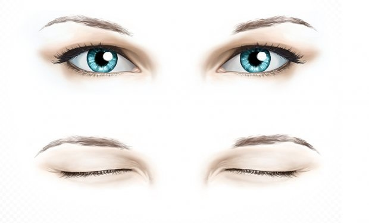
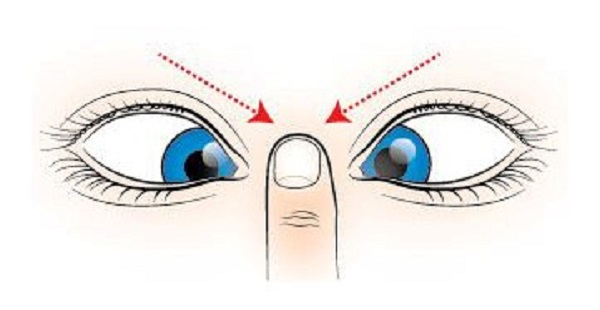
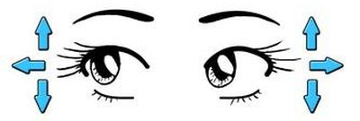
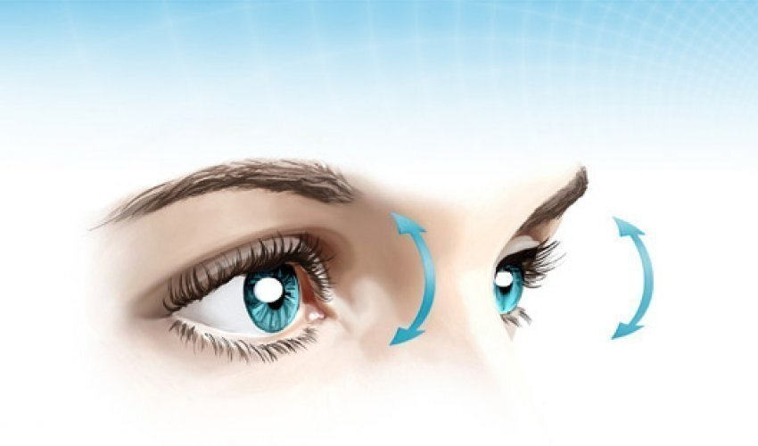
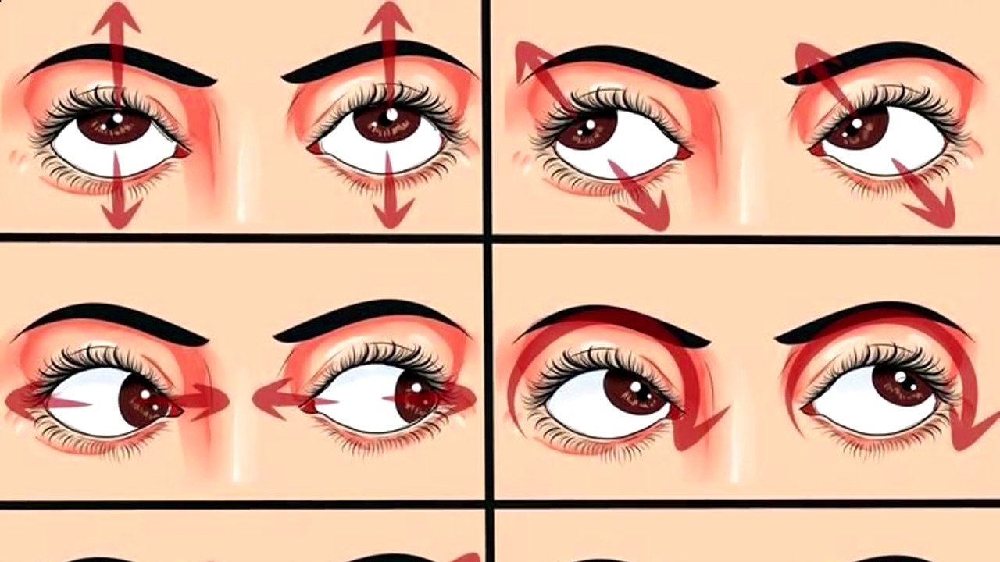
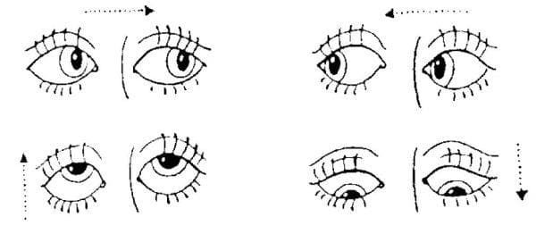
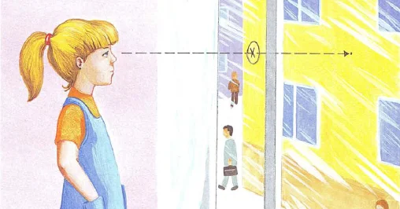
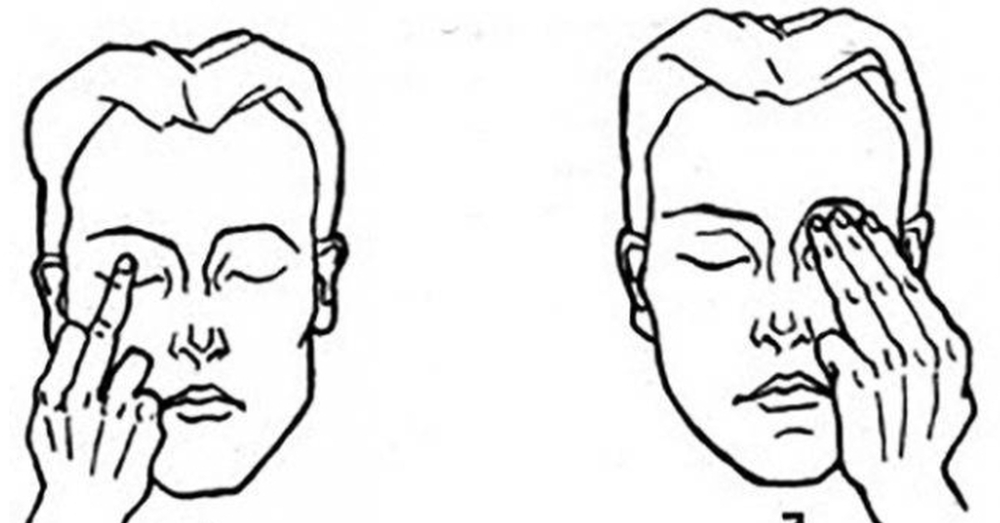

Крепко закройте глаза на 3–5 секунд. Повторите 6–8 раз
Смотрите прямо перед собой 2–3 секунды, затем сводите зрачки к переносице, приблизив палец к носу на 3–5 секунд. Повторите 10–12 раз.
Потолок - стены. Медленно переводите взгляд с пола на потолок, вправо, влево и обратно, не меняя положения головы. Повторите 8–12 раз
Быстро и легко моргайте 2 минуты. Это упражнение способствует улучшению кровообращения.
Перемещайте взгляд в разных направлениях: по кругу — по часовой стрелке и против. Упражнение укрепляет мышцы глаз.
Вверх — влево, вниз — вправо и наоборот. Глаза при этом могут быть открыты или закрыты, как удобнее.
Зажмурьте глаза на пять секунд и широко распахните веки. Этот метод укрепляет и расслабляет мышцы глазного яблока, повышает обмен веществ и циркуляцию крови в тканях. Повторите 8–10 раз.

Определите точку на стекле. Выберите за окном далёкий объект, несколько секунд смотрите вдаль, потом переведите взгляд на точку. Позже можно усложнить нагрузку — фокусироваться на четырёх разноудалённых объектах.
Тремя пальцами каждой руки легко нажмите на верхние веки, через 1–2 секунды снимите пальцы с век. Повторите 3 раза. Упражнение улучшает циркуляцию внутриглазной жидкости.
